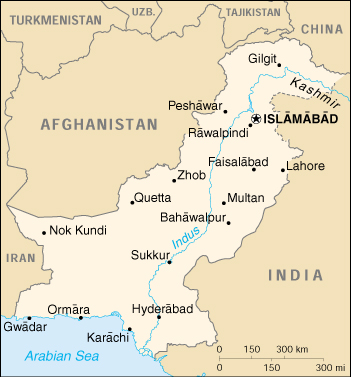

{kind=link}


| Pakistan |
|
|  | |
| Introduction |
Background: The separation in 1947 of British India into the Muslim state of Pakistan (with two sections West and East) and largely Hindu India was never satisfactorily resolved. A third war between these countries in 1971 resulted in East Pakistan seceding and becoming the separate nation of Bangladesh. A dispute over the state of Kashmir is ongoing. In response to Indian nuclear weapons testing, Pakistan conducted its own tests in 1998.
| Geography |
Location: Southern Asia, bordering the Arabian Sea, between India on the east and Iran and Afghanistan on the west and China in the north
Geographic coordinates: 30 00 N, 70 00 E
Map references: Asia
Area:
total:
803,940 sq km
land:
778,720 sq km
water:
25,220 sq km
Area - comparative: slightly less than twice the size of California
Land boundaries:
total:
6,774 km
border countries:
Afghanistan 2,430 km, China 523 km, India 2,912 km, Iran 909 km
Coastline: 1,046 km
Maritime claims:
contiguous zone:
24 nm
continental shelf:
200 nm or to the edge of the continental margin
exclusive economic zone:
200 nm
territorial sea:
12 nm
Climate: mostly hot, dry desert; temperate in northwest; arctic in north
Terrain: flat Indus plain in east; mountains in north and northwest; Balochistan plateau in west
Elevation extremes:
lowest point:
Indian Ocean 0 m
highest point:
K2 (Mt. Godwin-Austen) 8,611 m
Natural resources: land, extensive natural gas reserves, limited petroleum, poor quality coal, iron ore, copper, salt, limestone
Land use:
arable land:
27%
permanent crops:
1%
permanent pastures:
6%
forests and woodland:
5%
other:
61% (1993 est.)
Irrigated land: 171,100 sq km (1993 est.)
Natural hazards: frequent earthquakes, occasionally severe especially in north and west; flooding along the Indus after heavy rains (July and August)
Environment - current issues: water pollution from raw sewage, industrial wastes, and agricultural runoff; limited natural fresh water resources; a majority of the population does not have access to potable water; deforestation; soil erosion; desertification
Environment - international agreements:
party to:
Biodiversity, Climate Change, Desertification, Endangered Species, Environmental Modification, Hazardous Wastes, Law of the Sea, Marine Dumping, Nuclear Test Ban, Ozone Layer Protection, Ship Pollution, Wetlands
signed, but not ratified:
Marine Life Conservation
Geography - note: controls Khyber Pass and Bolan Pass, traditional invasion routes between Central Asia and the Indian Subcontinent
| People |
Population: 141,553,775 (July 2000 est.)
Age structure:
0-14 years:
41% (male 29,880,574; female 28,145,247)
15-64 years:
55% (male 39,751,222; female 37,981,378)
65 years and over:
4% (male 2,856,305; female 2,939,049) (2000 est.)
Population growth rate: 2.17% (2000 est.)
Birth rate: 32.11 births/1,000 population (2000 est.)
Death rate: 9.51 deaths/1,000 population (2000 est.)
Net migration rate: -0.9 migrant(s)/1,000 population (2000 est.)
Sex ratio:
at birth:
1.05 male(s)/female
under 15 years:
1.06 male(s)/female
15-64 years:
1.05 male(s)/female
65 years and over:
0.97 male(s)/female
total population:
1.05 male(s)/female (2000 est.)
Infant mortality rate: 82.49 deaths/1,000 live births (2000 est.)
Life expectancy at birth:
total population:
61.07 years
male:
60.27 years
female:
61.91 years (2000 est.)
Total fertility rate: 4.56 children born/woman (2000 est.)
Nationality:
noun:
Pakistani(s)
adjective:
Pakistani
Ethnic groups: Punjabi, Sindhi, Pashtun (Pathan), Baloch, Muhajir (immigrants from India at the time of partition and their descendants)
Religions: Muslim 97% (Sunni 77%, Shi'a 20%), Christian, Hindu, and other 3%
Languages: Punjabi 48%, Sindhi 12%, Siraiki (a Punjabi variant) 10%, Pashtu 8%, Urdu (official) 8%, Balochi 3%, Hindko 2%, Brahui 1%, English (official and lingua franca of Pakistani elite and most government ministries), Burushaski, and other 8%
Literacy:
definition:
age 15 and over can read and write
total population:
37.8%
male:
50%
female:
24.4% (1995 est.)
| Government |
Country name:
conventional long form:
Islamic Republic of Pakistan
conventional short form:
Pakistan
former:
West Pakistan
Data code: PK
Government type: federal republic
Capital: Islamabad
Administrative divisions:
4 provinces, 1 territory*, and 1 capital territory**; Balochistan, Federally Administered Tribal Areas*, Islamabad Capital Territory**, North-West Frontier, Punjab, Sindh
note:
the Pakistani-administered portion of the disputed Jammu and Kashmir region includes Azad Kashmir and the Northern Areas
Independence: 14 August 1947 (from UK)
National holiday: Pakistan Day, 23 March (1956) (proclamation of the republic)
Constitution: 10 April 1973, suspended 5 July 1977, restored with amendments 30 December 1985; suspended 15 October 1999
Legal system: based on English common law with provisions to accommodate Pakistan's status as an Islamic state; accepts compulsory ICJ jurisdiction, with reservations
Suffrage: 21 years of age; universal; separate electorates and reserved parliamentary seats for non-Muslims
Executive branch:
note:
following a military takeover on 12 October 1999, Chief of Army Staff and Chairman of the Joint Chiefs of Staff Committee, Gen. Pervez MUSHARRAF suspended Pakistan's constitution and assumed the additional title of Chief Executive; exercising the powers of the head of the government, he appointed an eight-member National Security Council to function as Pakistan's supreme governing body; President Mohammad Rafiq TARAR remains the ceremonial chief of state
chief of state:
President Mohammad Rafiq TARAR (since 31 December 1997)
head of government:
Chief Executive Gen. Pervez MUSHARRAF (since 12 October 1999)
cabinet:
Cabinet appointed by the chief executive
elections:
president elected by Parliament for a five-year term; election last held 31 December 1997 (next to be held NA 2002); following legislative elections, the leader of the majority party or leader of a majority coalition is usually elected prime minister by the National Assembly; election last held 3 February 1997 (next to be held NA); note - Gen. Pervez MUSHARRAF overthrew the government of Prime Minister Mohammad Nawaz SHARIF in the military takeover of 12 October 1999; in May 2000, the Supreme Court validated the October 1999 coup and set a three-year limit in office for Chief Executive MUSHARRAF
election results:
Rafiq TARAR elected president; percent of Parliament and provincial vote - NA; results are for the last election for prime minister prior to the military takeover of 12 October 1999 - Mohammad Nawaz SHARIF elected prime minister; percent of National Assembly vote - NA
Legislative branch:
note - Gen. Pervez MUSHARRAF dissolved Parliament following the military takeover of 12 October 1999; bicameral Parliament or Majlis-e-Shoora consists of the Senate (87 seats; members indirectly elected by provincial assemblies to serve six-year terms; one-third of the members up for election every two years) and the National Assembly (217 seats - 10 represent non-Muslims; members elected by popular vote to serve five-year terms)
elections:
Senate - last held 12 March 1997 (next to be held NA); National Assembly - last held 3 February 1997 (next to be held NA); note - no timetable has yet been given for elections following the military takeover
election results:
Senate - percent of vote by party - NA; seats by party - PML/N 30, PPP 17, ANP 7, MQM/A 6, JWP 5, BNP 4, JUI/F 2, PML/J 2, BNM/M 1, PKMAP 1, TJP 1, independents 6, vacant 5; National Assembly - percent of vote by party - NA; seats by party - PML/N 137, PPP 18, MQM/A 12, ANP 10, BNP 3, JWP 2, JUI/F 2, PPP/SB 1, NPP 1, independents 21, minorities 10; note - Gen. Pervez MUSHARRAF dismissed Parliament 15 October 1999
Judicial branch: Supreme Court, judicial chiefs are appointed by the president; Federal Islamic (Shari'a) Court
Political parties and leaders:
note:
Gen. Pervez MUSHARRAF dissolved Parliament following the military takeover of 12 October 1999, however, political parties have been allowed to operate; Awami National Party or ANP [Wali KHAN]; Balochistan National Movement/Hayee Group or BNM/H [Dr. HAYEE Baluch]; Balochistan National Movement/Mengal Group or BNM/M [Sardar Akhtar MENGAL]; Baluch National Party or BNP [leader NA]; Jamhoori Watan Party or JWP [Akbar Khan BUGTI]; Jamiat-al-Hadith or JAH [leader NA]; Jamiat Ulema-i-Islam, Fazlur Rehman faction or JUI/F; Jamiat Ulema-i-Pakistan, Niazi faction or JUP/NI [leader NA]; Millat Part [Farooq LEGHARI]; Milli Yakjheti Council or MYC is an umbrella organization which includes Jamaat-i-Islami or JI [Qazi Hussain AHMED], Jamiat Ulema-i-Islam, Sami-ul-Haq faction or JUI/S, Tehrik-I-Jafria Pakistan or TJP [Allama Sajid NAQVI], and Jamiat Ulema-i-Pakistan, Noorani faction or JUP/NO; Mutahida Qaumi Movement, Altaf faction or MQM/A [Altaf HUSSAIN]; National People's Party or NPP [Ghulam Mustapha JATOI]; Pakhtun Khwa Milli Awami Party or PKMAP [Mahmood Khan ACHAKZAI]; Pakhtun Quami Party or PKQP [Mohammed AFZAL Khan]; Pakistan Awami Tehrik or PAT [Tahir ul QADRI]; Pakistan Muslim League, Functional Group or PML/F [Pir PAGARO]; Pakistan Muslim League, Junejo faction or PML/J [Hamid Nasir CHATTHA]; Pakistan Muslim League, Nawaz Sharif faction or PML/N [Nawaz SHARIF]; Pakistan National Party or PNP [leader NA]; Pakistan People's Party or PPP [Benazir BHUTTO]; Pakistan People's Party/Shaheed Bhutto or PPP/SB [Ghinva BHUTTO]; Pakistan Tehrik-e-Insaaf or PTI [Imran KHAN]
note:
political alliances in Pakistan can shift frequently
Political pressure groups and leaders: military remains important political force; ulema (clergy), landowners, industrialists, and small merchants also influential
International organization participation: AsDB, C (suspended), CCC, CP, ECO, ESCAP, FAO, G-19, G-24, G-77, IAEA, IBRD, ICAO, ICC, ICFTU, ICRM, IDA, IDB, IFAD, IFC, IFRCS, IHO, ILO, IMF, IMO, Inmarsat, Intelsat, Interpol, IOC, IOM, ISO, ITU, MINURSO, MONUC, NAM, OAS (observer), OIC, OPCW, PCA, SAARC, UN, UNAMSIL, UNCTAD, UNESCO, UNHCR, UNIDO, UNIKOM, UNITAR, UNMIBH, UNMIK, UNMOP, UNOMIG, UNTAET, UPU, WCL, WFTU, WHO, WIPO, WMO, WToO, WTrO
Diplomatic representation in the US:
chief of mission:
Ambassador Maleeha LODHI
chancery:
2315 Massachusetts Avenue NW, Washington, DC 20008
telephone:
[1] (202) 939-6200
FAX:
[1] (202) 387-0484
consulate(s) general:
Los Angeles and New York
Diplomatic representation from the US:
chief of mission:
Ambassador William MILAM
embassy:
Diplomatic Enclave, Ramna 5, Islamabad
mailing address:
P. O. Box 1048, Unit 62200, APO AE 09812-2200
telephone:
[92] (51) 826161 through 826179
FAX:
[92] (51) 276427
consulate(s) general:
Karachi
consulate(s):
Lahore, Peshawar
Flag description: green with a vertical white band (symbolizing the role of religious minorities) on the hoist side; a large white crescent and star are centered in the green field; the crescent, star, and color green are traditional symbols of Islam
| Economy |
Economy - overview: Pakistan is a poor, heavily populated country, suffering from internal political disputes, lack of foreign investment, and a costly confrontation with neighboring India. Pakistan's economic outlook continues to be marred by its weak foreign exchange position, notably its continued reliance on international creditors for hard currency inflows. The MUSHARRAF government faces $32 billion in external debt and has nearly completed rescheduling with Paris Club members and other bilateral creditors. Foreign loans and grants provide approximately 25% of government revenue, but debt service obligations total nearly 50% of government expenditure. The IMF has remained silent on future disbursements from its $1.56 billion bailout package initiated in 1999, and other international financial institutions are gauging the current administration's resolve to implement necessary fiscal reforms. MUSHARRAF's ambitious economic agenda includes measures to widen the tax net, privatize public sector assets, and improve its balance of trade position. Pakistan has made privatization a cornerstone of economic revival, but may have difficulty attracting new investors until it receives positive endorsement from the World Bank. The Bank has withheld its approval pending resolution of the pricing dispute between the government and independent power producers.
GDP: purchasing power parity - $282 billion (1999 est.)
GDP - real growth rate: 3.1% (1999 est.)
GDP - per capita: purchasing power parity - $2,000 (1999 est.)
GDP - composition by sector:
agriculture:
25.2%
industry:
26.6%
services:
48.2% (1998 est.)
Population below poverty line: 34% (1991 est.)
Household income or consumption by percentage share:
lowest 10%:
4.1%
highest 10%:
27.7% (1996)
Inflation rate (consumer prices): 6% (1999 est.)
Labor force:
38.6 million (1999)
note:
extensive export of labor, mostly to the Middle East, and use of child labor
Labor force - by occupation: agriculture 44%, industry 17%, services 39% (1999 est.)
Unemployment rate: 7% (FY98/99 est.)
Budget:
revenues:
$10 billion
expenditures:
$11.7 billion, including capital expenditures of $NA (FY98/99)
Industries: textiles, food processing, beverages, construction materials, clothing, paper products, shrimp
Industrial production growth rate: 3.8% (1999 est.)
Electricity - production: 59.262 billion kWh (1998)
Electricity - production by source:
fossil fuel:
63.05%
hydro:
36.31%
nuclear:
0.64%
other:
0% (1998)
Electricity - consumption: 55.114 billion kWh (1998)
Electricity - exports: 0 kWh (1998)
Electricity - imports: 0 kWh (1998)
Agriculture - products: cotton, wheat, rice, sugarcane, fruits, vegetables; milk, beef, mutton, eggs
Exports: $8.4 billion (f.o.b., 1999)
Exports - commodities: cotton, fabrics, and yarn, rice, other agricultural products
Exports - partners: US 22%, Hong Kong 7%, UK 7%, Germany 7%, UAE 5% (FY98/99)
Imports: $9.8 billion (f.o.b., 1999)
Imports - commodities: machinery, petroleum, petroleum products, chemicals, transportation equipment, edible oils, grains, pulses, flour
Imports - partners: US 8%, Japan 8%, Malaysia 7%, Saudi Arabia 7%, UAE 7% (FY98/99)
Debt - external: $32 billion (1999 est.)
Economic aid - recipient: $2 billion (FY97/98)
Currency: 1 Pakistani rupee (PRe) = 100 paisa
Exchange rates: Pakistani rupees (PRs) per US$1 - 51.90 (December 1999), 44.550 (1998), 40.185 (1997), 35.266 (1996), 30.930 (1995)
Fiscal year: 1 July - 30 June
| Communications |
Telephones - main lines in use: 2.861 million (March 1999)
Telephones - mobile cellular: 158,000 (1998)
Telephone system:
the domestic system is mediocre, but improving; service is adequate for government and business use, in part because major businesses have established their own private systems; since 1988, the government has promoted investment in the national telecommunications system on a priority basis, significantly increasing network capacity; despite major improvements in trunk and urban systems, telecommunication services are still not readily available to the majority of the rural population
domestic:
microwave radio relay, coaxial cable, fiber-optic cable, cellular, and satellite
international:
satellite earth stations - 3 Intelsat (1 Atlantic Ocean and 2 Indian Ocean); 3 operational international gateway exchanges (1 at Karachi and 2 at Islamabad); microwave radio relay to neighboring countries
Radio broadcast stations: AM 27, FM 1, shortwave 21 (1998)
Radios: 13.5 million (1997)
Television broadcast stations: 22 (plus seven low-power repeaters) (1997)
Televisions: 3.1 million (1997)
Internet Service Providers (ISPs): 26 (1999)
| Transportation |
Railways:
total:
8,163 km
broad gauge:
7,718 km 1.676-m gauge (293 km electrified; 1,037 km double track)
narrow gauge:
445 km 1.000-m gauge (1996 est.)
Highways:
total:
247,811 km
paved:
141,252 km (including 339 km of expressways)
unpaved:
106,559 km (1998 est.)
Pipelines: crude oil 250 km; petroleum products 885 km; natural gas 4,044 km (1987)
Ports and harbors: Karachi, Port Muhammad bin Qasim
Merchant marine:
total:
20 ships (1,000 GRT or over) totaling 288,249 GRT/444,451 DWT
ships by type:
bulk 1, cargo 15, container 3, petroleum tanker 1 (1999 est.)
Airports: 118 (1999 est.)
Airports - with paved runways:
total:
82
over 3,047 m:
12
2,438 to 3,047 m:
21
1,524 to 2,437 m:
32
914 to 1,523 m:
14
under 914 m:
3 (1999 est.)
Airports - with unpaved runways:
total:
36
1,524 to 2,437 m:
7
914 to 1,523 m:
9
under 914 m:
20 (1999 est.)
Heliports: 7 (1999 est.)
| Military |
Military branches: Army, Navy, Air Force, Civil Armed Forces, National Guard
Military manpower - military age: 17 years of age
Military manpower - availability:
males age 15-49:
34,632,509 (2000 est.)
Military manpower - fit for military service:
males age 15-49:
21,206,148 (2000 est.)
Military manpower - reaching military age annually:
males:
1,604,806 (2000 est.)
Military expenditures - dollar figure: $2.435 billion (FY99/00)
Military expenditures - percent of GDP: 3.9% (FY99/00)
| Transnational Issues |
Disputes - international: status of Kashmir with India; water-sharing problems with India over the Indus River (Wular Barrage)
Illicit drugs: producer of illicit opium and hashish for the international drug trade (poppy cultivation in 1999 - 1,570 hectares, a 48% drop from 1998 because of eradication and alternative development); key transit area for Southwest Asian heroin moving to Western markets; narcotics still move from Afghanistan into Balochistan Province